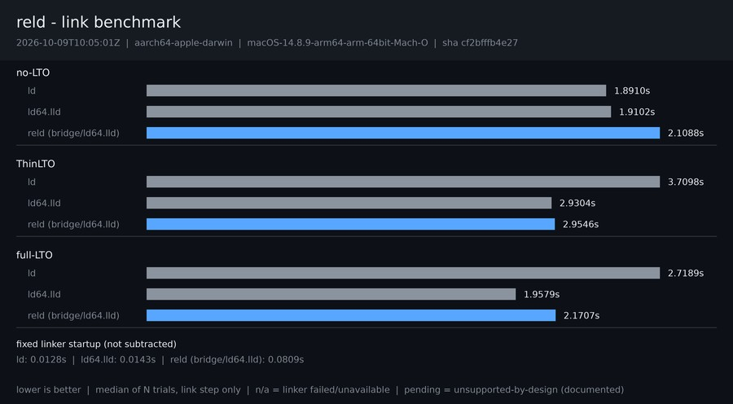

2026-10-09T10:05:01Z · aarch64-apple-darwin · macOS-14.8.9-arm64-arm-64bit-Mach-O

| Configuration | ld | ld64.lld | reld (bridge/ld64.lld) |
|---|---|---|---|
| no-LTO | 1.8910s | 1.9102s | 2.1088s |
| ThinLTO | 3.7098s | 2.9304s | 2.9546s |
| full-LTO | 2.7189s | 1.9579s | 2.1707s |
Reported raw and never subtracted from final-link medians.
| Series | Seconds |
|---|---|
| ld | 0.0128s |
| ld64.lld | 0.0143s |
| reld (bridge/ld64.lld) | 0.0809s |